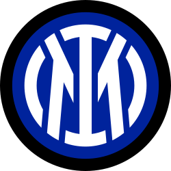

El Nerazzurri italiano
El Inter de Milán fue fundado en 1908 y es uno de los clubes más importantes de Italia.
| Dato | Información |
|---|---|
| Fundación | 1908 |
| País | Italia 🇮🇹 |
| Ciudad | Milán |
| Estadio | San Siro |
| Liga | Serie A |
El Inter ha ganado tres Copas de Europa/Champions League.
| Año | Resultado |
|---|---|
| 1964 | Campeón |
| 1965 | Campeón |
| 2010 | Campeón |
El Inter ganó la Champions League de 2010 después de derrotar al Bayern Múnich en la final.